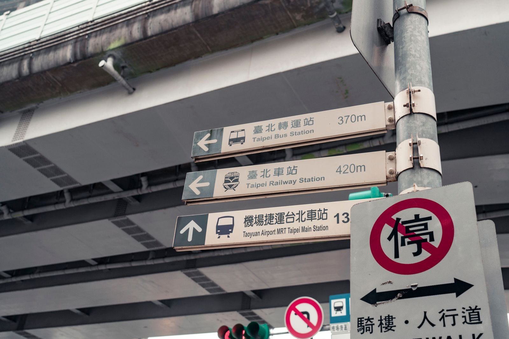

타오위안공항 새벽 도착, 시내까지 뭐 타고 갈까?
자정 넘어 도착하는 저가항공 여행자를 위해 — 24시간 버스, 택시, 마중 중 상황별로 고르는 법을 모았습니다.
게시
"새벽 1시에 도착하는데 공항철도가 끊겼대요." 타오위안공항 새벽 도착 여행자가 가장 먼저 부딪히는 문제예요. 공항철도는 자정 이후 운행하지 않아 24시간 버스나 택시를 골라야 해요. 궈광커윈·공항 공식 안내와 실제 여행자들의 경험을 바탕으로 정리해봤어요.
01 · 타오위안공항 새벽 도착 교통 한눈에 비교
| 궈광 1819 버스 | 공항 택시 | 공항철도 | |
|---|---|---|---|
| 운행 | 24시간, 공항 출발 00:20 첫차·23:30 막차, 약 30분 간격 | 24시간 | 대략 05:30~23:00, 자정 이후 없음 |
| 요금(2026년 9월 기준) | 3열 좌석 NT$164, 4열 좌석 NT$133 | 미터 요금+15%, 통행료 별도 | 타이베이역까지 NT$160 |
| 내리는 곳 | 타이베이 버스터미널(台北轉運站) | 숙소 앞 | 타이베이역 |
| 추천 상황 | 혼자·둘, 짐이 적을 때 | 가족·짐 많을 때, 숙소가 역에서 멀 때 | 아침 도착 |
02 · 1819 버스 탈 때 알아둘 것
타이베이 쪽 정류장 변경 2025년 1월 1일부터 타이베이 쪽 승하차는 타이베이 버스터미널 4층 409번 승강장이에요.
매표 카운터 시간 제1터미널은 24시간, 제2터미널은 07:30~22:00 운영이에요(2026년 9월 기준). 심야에 제2터미널로 도착하면 표 사는 방법을 미리 확인하세요.
이지카드 탑승 궈광커윈 안내에 따르면 이지카드 같은 교통카드로 탈 수 있어요. 심야에는 제2터미널 매표 카운터가 닫혀 있으니 카드 잔액을 미리 넉넉히 충전해두세요.

03 · 부모님과 함께라면 택시나 마중
밤늦게 버스에서 내려 터미널에서 다시 택시를 잡는 건 부모님에게 부담이 될 수 있어요. 공항 택시는 미터 요금에 15%가 더해지고 통행료가 따로 붙지만, 숙소 앞까지 한 번에 갈 수 있어요. 타오위안 택시 기본요금은 첫 1.25km NT$95예요(2026년 9월 기준). 인원이 많다면 미리 예약한 공항 픽업이 더 편할 수 있어요.

04 · 새벽 입국 심사 팁
심야에도 입국 심사는 운영해요. 입국신고서(TWAC)를 미리 작성해두면 심사 시간이 줄고, 도착 직후 숙소에 늦은 체크인 연락을 해두면 마음이 편해요.
"새벽엔 1819, 짐 많고 부모님이면 택시." — 늦은 밤 타오위안에 도착해 본 여행자들의 조언을 요약했습니다.
늦게 도착한 다음 날 아침은 숙소 근처에서 가볍게 시작해보세요. 타이베이 조식 맛집에서 또우장 가게를 찾을 수 있고, 대표적인 곳으로 딩위안 또우장(鼎元豆漿)이 있어요. 숙소 주변 식당은 타이베이 맛집 지도에서 한 번에 볼 수 있어요.
지도에서 타이베이 맛집을 찾아보세요
도착 다음 날 아침 먹을 곳을 숙소 근처에서 미리 골라보세요.